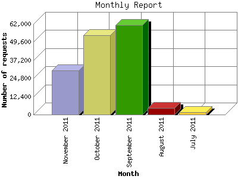

Analog 5.1
Analog 5.1 Report Magic 2.21
Report Magic 2.21The Monthly Report identifies activity for each month in the report
time frame. Remember that each page hit can result in several server requests
as the images for each page are loaded.
Note: Depending on the
report time frame, the first and last months may not represent a complete
month's worth of data, resulting in lower hits.

| Month | Number of requests | Number of page requests | |
|---|---|---|---|
| 1. | July 2011 | 1,452 | 880 |
| 2. | August 2011 | 4,554 | 1,979 |
| 3. | September 2011 | 61,203 | 3,045 |
| 4. | October 2011 | 54,113 | 2,937 |
| 5. | November 2011 | 30,086 | 1,913 |
Most active month September 2011 : 3,045 pages sent. 61,203 requests handled.
Monthly average: 2,150 pages sent. 30,281 requests handled.
This report was generated on November 24, 2011 04:12.
Report time frame July 13, 2011 04:17 to November 23, 2011 23:59.
| Web statistics report produced by: | |
| Analog 5.1 | Report Magic 2.21 |